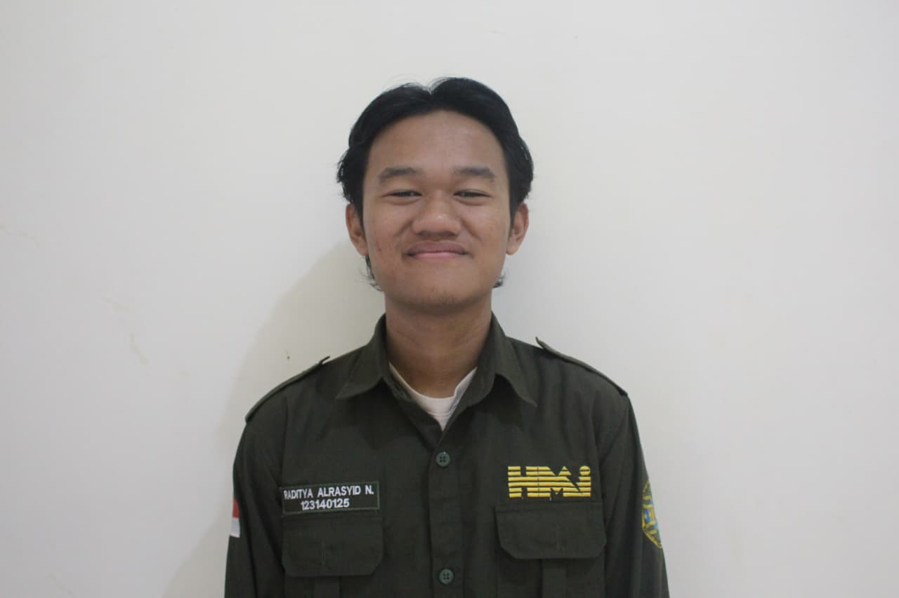

FoodSaver

Saya adalah mahasiswa Informatika ITERA yang sedang mengembangkan kemampuan di bidang pengembangan web, mobile, data mining, software testing, dan teknologi berbasis AI.
Raditya Alrasyid Nugroho adalah mahasiswa Informatika di Institut Teknologi Sumatera yang memiliki ketertarikan pada pengembangan aplikasi, pengujian perangkat lunak, data mining, dan pemanfaatan teknologi AI. Melalui berbagai project akademik dan eksplorasi mandiri, saya terus mengembangkan kemampuan dalam membangun solusi digital yang sederhana, fungsional, dan mudah digunakan.
Beberapa project yang menunjukkan minat dalam mobile, data mining, AI, dan pengujian perangkat lunak.


Beberapa pengalaman project yang mendukung pengembangan kompetensi di bidang aplikasi, AI, data mining, dan software testing.
Mengembangkan aplikasi mobile multiplatform untuk manajemen bahan makanan dan reminder kedaluwarsa.
Membangun sistem prediksi tingkat stres mahasiswa menggunakan pendekatan Neuro-Fuzzy/ANFIS dan FIS berbasis aturan.
Menganalisis pengaruh metode preprocessing terhadap hasil klasifikasi risiko diabetes.
Melakukan pengujian perangkat lunak mulai dari unit test, UI test, API test, hingga performance test.
Terbuka untuk diskusi project, kolaborasi, atau pengembangan portofolio lebih lanjut.